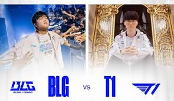

if the road to 2023 was hard 2024 was near impossible. Faker's injury would flare up again forcing him to change his posture and setup positioning meanwhile the team was unable to practice due to Ddos attacks against them T1 would be able to claim their trip to worlds in spite of everything through the worlds guantlent claiming the 4th and last worlds spot for Korea after a full 5 games against KT rollster. yet despite everything once they reached the Worlds stage things looked different. although they would lose their first game to LNG they would then quickly roll every other team to advance from swiss stage at 3-1 again. In quarters they would take down China's Top ESports Semis would see them agianst tournament favorite and regional wall GenG who had a 10 game Bo5 win streak against T1, but T1 was on a mission. GenG would fall in 4 games and all that stood between ZOFGK and a new T1 dynasty was BLG the Chinese 1rst seed.
Game 1 and 3 saw BLG stomp T1, T1 Stomped back in game 2, but it was games 4 and 5 that took the cake. Game 4 saw T1 go down early but a solo kill by faker onto BLG's botlaner Elk started a snowball that would lead to a T1 victory, Capped off by a wombo combo set up by Faker himself that all but sealed the game. Game 5 was close neither team taking unnessicary risk but after BLG found T1's adc in a teamfight hope was dwindling until Faker single handedly turned the fight on BLG's heads. T1 would lift the cup a 5th time.

We don't know yet if the ZOFGK rooster will remain together, but we do know the legacy of greatness this team will leave behind the only full 5 stack to claim back to back world finals(T1 changed toplaners between 2015 and 2016) and a 3 years in a row world finalist. had the last game vs DRX in 2022 gone slightly differently we would be talking about the first 3peat ever in league history. but who knows. 2025 isnt that far away...